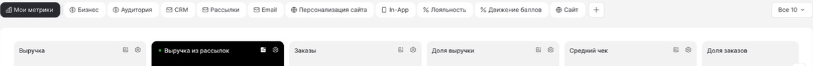
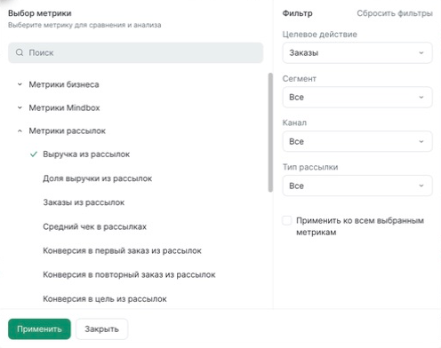
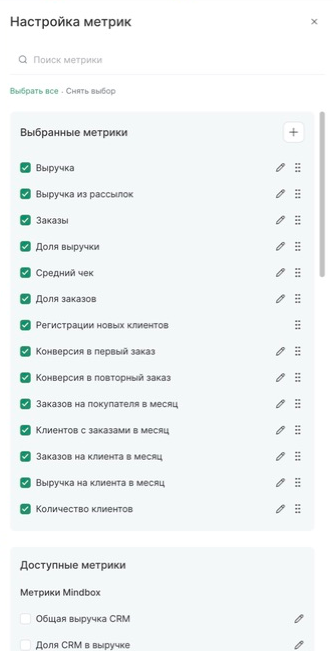
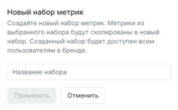
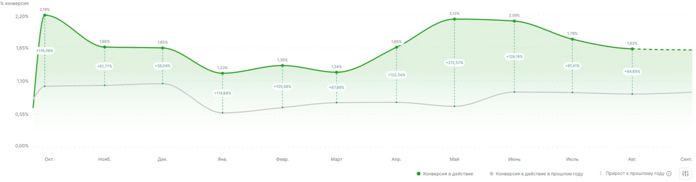
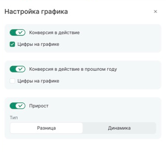
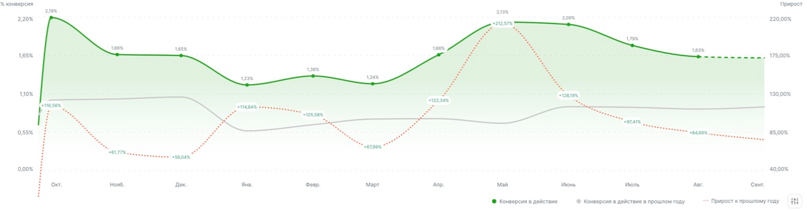
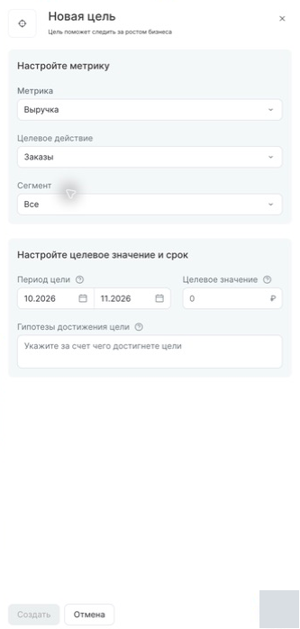
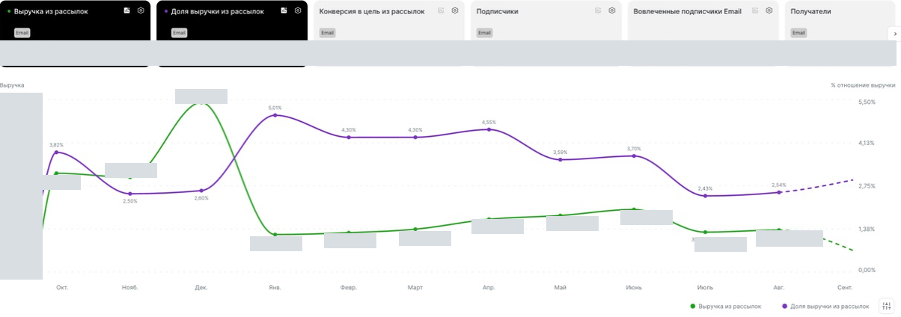
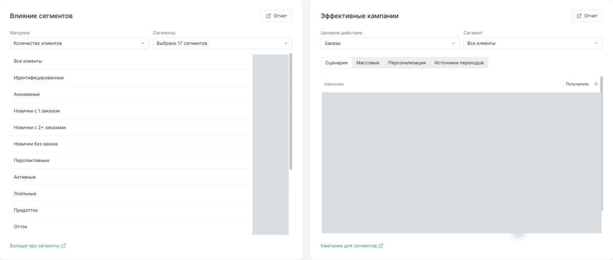

Сохранённые снимки Mindbox: образцы взаимодействий. Оболочка и визуальный язык остаются из пилота Custometry. Данные исходного продукта не используются в драфте.
← Вернуться к драфту








